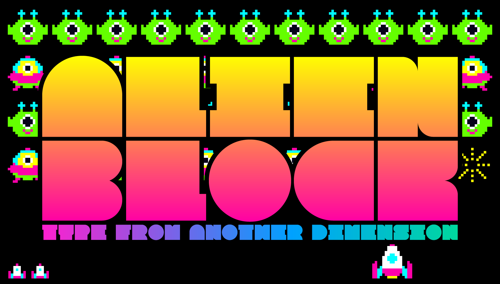
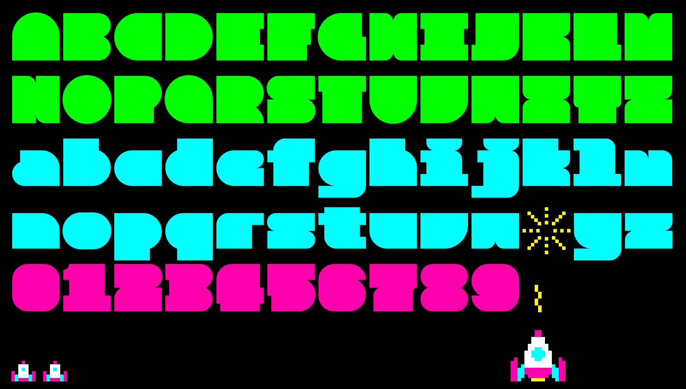
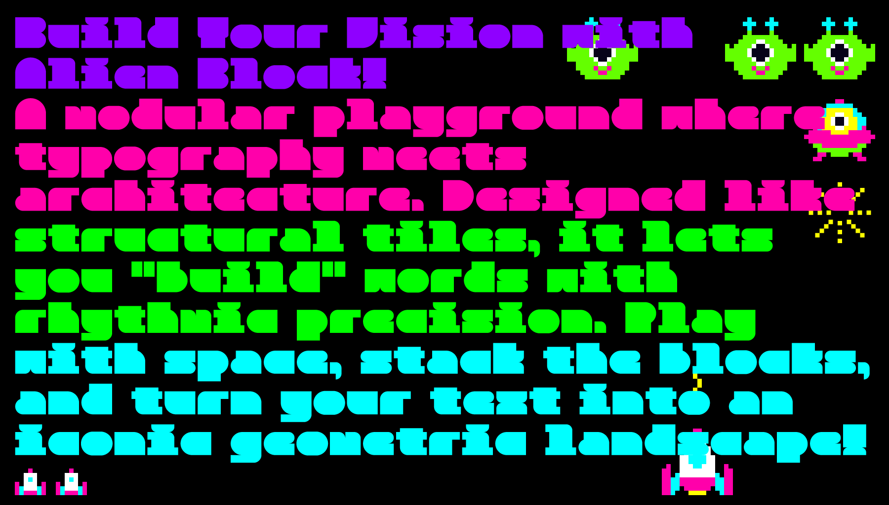
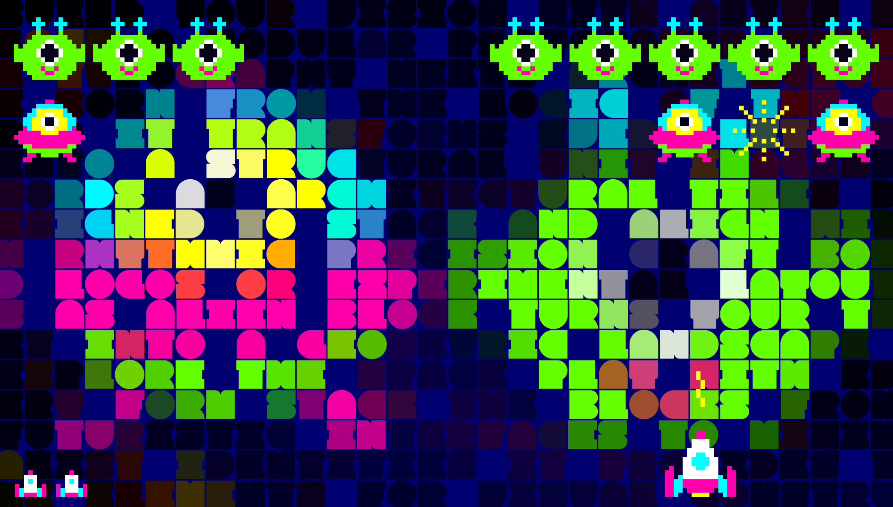

Alien Block is a structural display typeface that treats typography as architecture. Born from an exploration of modularity, it bridges the gap between the rigid logic of a grid and the expressive needs of modern graphic design.
At its core, Alien Block is built on a shared modular unit, allowing characters to stack and align like architectural tiles. This systematic approach creates a distinctive visual rhythm, making it an ideal choice for logos, headlines, and experimental layouts. It is particularly effective when used in "block" compositions, where the relationship between positive and negative space becomes as important as the letters themselves.
Whether you are designing a futuristic poster or a minimalist brand identity, Alien Block invites you to play with its modular nature. It transforms simple text into a rhythmic, geometric landscape, offering a fresh perspective on how we compose and perceive digital letterforms.
To contribute, see github.com/koci-design/AlienBlock.



